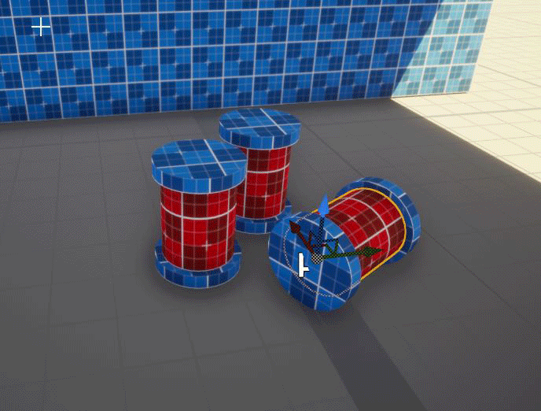
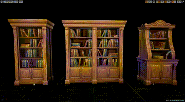

Nested Prefab Selection¶
Prefabricator allows easy selection of prefabs and the items inside of it.
If you use nested prefabs, the selection will toggle between the different levels allowing for easy modification
In the following barrel cluster example, selecting it initially will select the outer most nested prefab.
The next click will select the mesh that was clicked on. Subsequent clicks will move one level up, selecting the owning prefab
